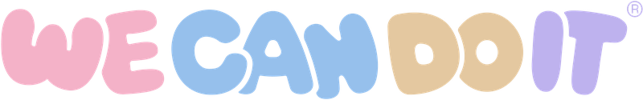

WE CAN DO IT · 위캔두잇
·
STEP 01
생년월일을 알려주세요
한 번만 입력하면 다음부터는 기억합니다.
성별
구슬이 당신을 읽는 중
STEP 02 · 오늘의 운세
쥐띠
74
지각지수
오늘의 하루
부문별 운세
오늘의 것들
- 행운의 색
- 행운의 숫자
- 행운의 장소
- 오늘의 음식
- 행운의 물건
- 피해야 할 것
오늘의 사람
그래서 오늘은
STEP 03 · 오늘의 명언
“
STEP 05 · 오늘의 넷플릭스
오늘 밤은 이걸 보세요
오늘의 운세와 명언에 맞춰 한 편만 골랐습니다.
오늘의 운세는 여기까지입니다. 내일 또 오세요.
STEP 04 · 오늘의 부적
부적은 나눌수록 세집니다.
저장해서 인스타그램에 올리면 오늘의 운이 한 단계 올라갑니다.